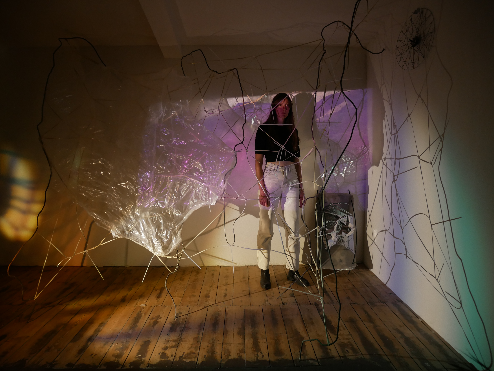
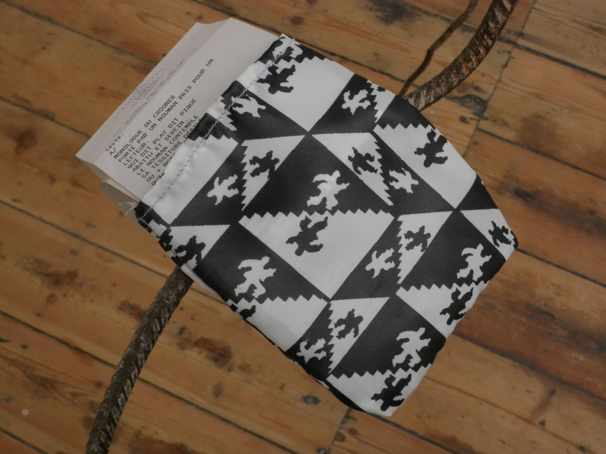
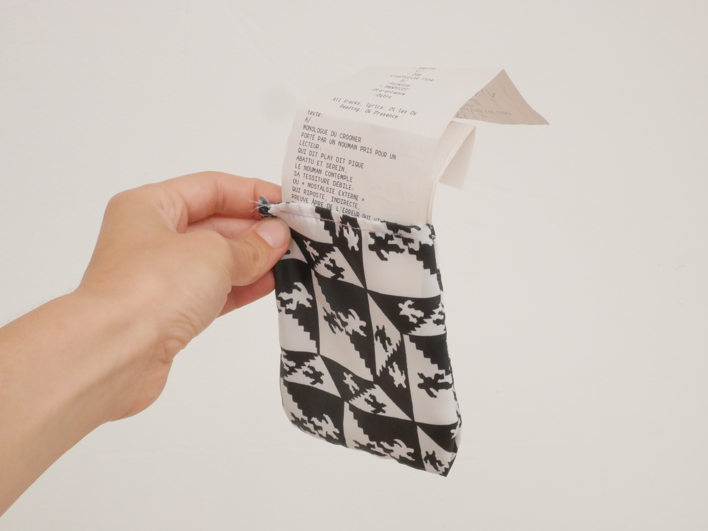
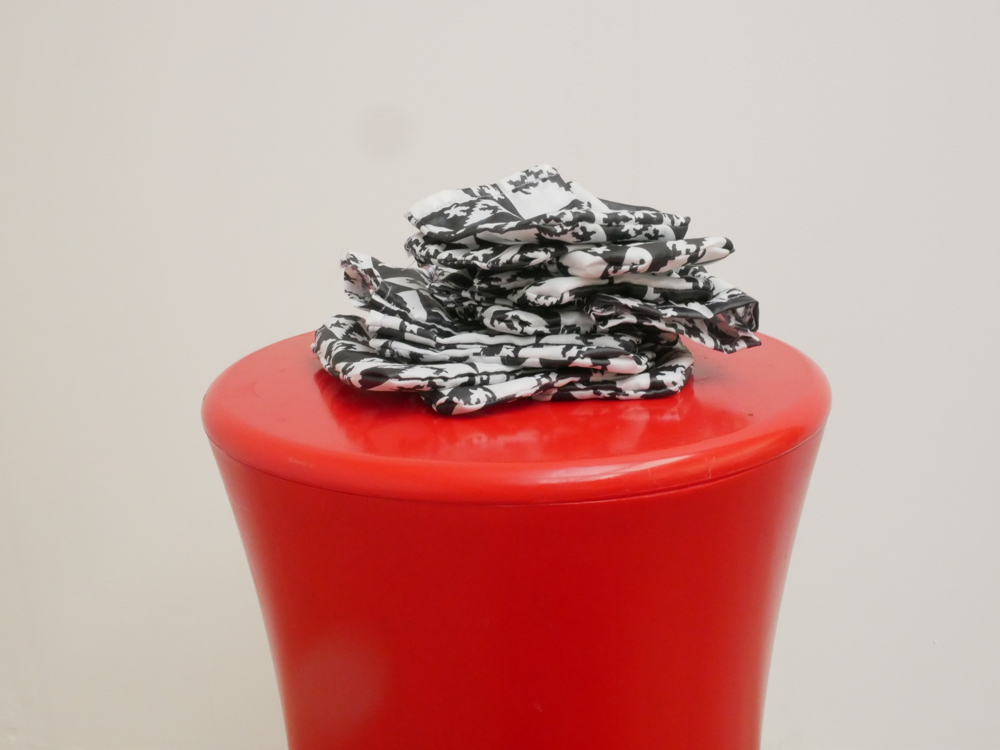
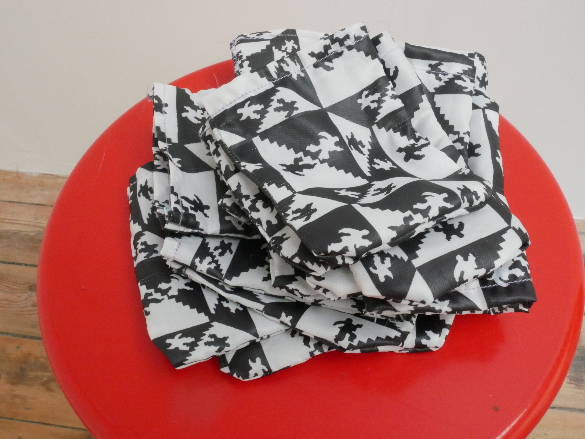

Oï les Ox - Crooner qui coule sous les clous

Buy Edition $10 Buy MP3 $8 Buy WAV $8
- The debut album from Brussels-based artist Aude Van Wyller, aka Oï les Ox.
- Includes guest appearances by Ok Presence and Furtherset.
- Mastered by Lorenzo Targhetta.
- Physical edition includes a digital download code.
Track Listing
- Qui dit Play dit Pique (18:56)
- Rien ne Tient dans tes Mains (10:32)
- 2db (15:22)
- Fulmine (11:43)
Release Date 2020
Catalog Number PV-11
Format Receipt and Digital
A/ Qui dit Play dit Pique
- Intro
- Nouman
- Cold Régalienne
- Plagiat
- Du Bellay
B/ Rien ne Tient dans tes Mains
- Rien ne Tient dans tes Mains
- Nabitu
C/ 2db
- 2db
- Elasticité Fine
D/ Fulmine
- Fulmine
- PMAPFCDT
- Pro-errance
- Outro
Crooner qui coule sous les clous, which translates to A crooner that sinks under nails, is Aude Van Wyller’s full-length debut under the Oï les Ox moniker.
The album’s libretto was written by the Brussels-based artist in her native French. The text utilizes wordplay, automatic writings, and word-by-word translations.
Van Wyller’s goal was to find order in a series of poems, outlining a story that follows Nouman, “quite anonymous, just someone making some shopping online,” and Cold Régalienne, a totalitarian governor who forces people to dance to music she broadcasts “at some hours of the day and of the night.” Through pop ballads and spoken word passages, Crooner qui coule sous les clous creates vivid sonic scenes that channel styles as diverse as coldwave, leftfield, and IDM. The result is a genre-bending opera, split into four parts, where melody, lyrics, and sound collage are merged into a cinematic experience.




